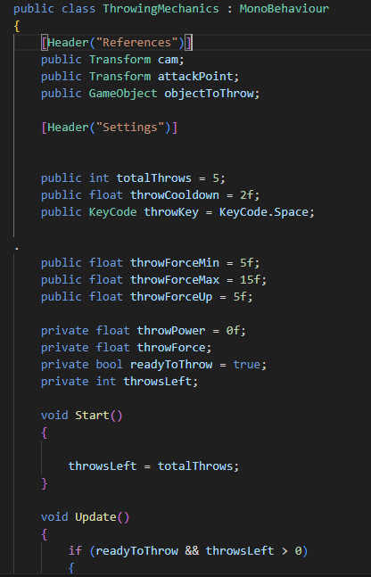

Claude Powell's Dev Diary(24429538)
Below is a link section for all the required links
Link to group GitHub
Link for pitch document
link for game
Update 1(Wednesday the 5th of February) Joining the group
I joined my group today. The people I joined were Mick Lawlor, Darragh Griffin, Warda Abbasi, Sean Nealon, Sania Malik, Corey Bowden, Martina Dumas González Iszcaray.
We went through a couple of ideas in a meeting in the library and also got to know each other and qualities we could bring to the group. We all decided from the start that we wanted to do a horror game.
Update 2 (Saturday the 8th February )Deciding on a idea
We had our second meeting yesterday and we decided on an idea. We decided on a horror game based in a carnival. We decided for gameplay that it would be multiple minigames and that we would do it in 3D. I was nervous to do 3D for the game but some of the others in the group were confident in our ability to do it in 3D so I decided it would be a great learning experience.
Update 3 (Monday February 10th) Adding more detail to the original idea
We had a meeting today where we decided to implement an idea that Mick had in the previous meeting which was to make the minigames with a bit of a twist like the movie Saw.
Update 4(Friday 14th February)Getting given our work by the producer
Today Warda, our producer, decided to divide up the minigames. We decided to have two people per minigame. I was grouped with Mick Lawlor and we were tasked with doing the skee ball minigame. I will supply a photo of the tasks she put up.
The other groups were as follows:
Pitch Document - Archie, Sean, and Darragh
Can Toss - Sean and Warda
Ring Toss - Sania, Corey.
We still have more minigames to code but we want to get 3 done first and then try to get the rest done.
Update 5 ( Friday 28th February) Starting the code for skee ball+Talking to Gavin Wade
I've made a huge start on the code for the first minigame and it was way harder than I could've expected. There's no tutorials for the specific game I am making (Skee ball) and I've never coded a game before so it has been a struggle. I've watched so many tutorials for different mechanics that my whole home page nearly is coding videos. I will have some of the videos I have used listed at the bottom of this update. Finding good tutorials for specific aspects of the game is challenging to say the least. I also went with Mick to ask Gavin Wade if we should reduce the amount of minigames and he said that the games should start quicker. This is because we were going to have 3 blocks of minigames but he thought it would be better to have the first block have 2 and then add a fourth to the middle column. Making the game in 3D was also way harder than I ever could've expected and I've found it really reduced the amount of videos explaining how to do certain things. I feel like i'm not coding as well or fast as I want to but hopefully this will make future game development feel a lot easier. It does make me worry that I won't be able to finish everything I wanted to do in time so I feel like I will have to talk to people in the group about that.
These are links to some videos I found useful
Update 6 (Wednesday 12th March)Finished main code+Talking to Gavin Wade
I had midterms in two modules last done now and I have a maths one in week 8 so progression in the game slowed down as I had not done enough work for those modules, especially for maths next week. Although this has been a setback, I have learnt to be more time-efficient and to get work done quicker. I have the code done now so I will send it to my partner for this minigame, Mick, to see if it works. This will be the first test so I will be expecting a few bugs from it.To help with this and make intergrating the code easier i wrote out notes on what everything so hopefully this will help. Also, Mick shared my concern about the timeline of the game so in one of the labs we went up to Gavin Wade and asked about the importance of finishing this game for our grade, as getting a good grade in this module is important to us. He said that obviously we should aim to complete the game, but he's not expecting everyone to finish so we should aim to finish it, but if we don't then we are graded on what is in the dev diary. We're planning on testing the code next week after our maths test and hopefully it works, but if not I will try to fix it after that.

Update 7 (Wednesday 19th March)Getting a new task to do
I realised that i had forgotten to make a power bar for the game which is probably important as its needed to see how much power is you have put in. Making this powerbar is my goal for this week.My plan to make it this week is to watch as many tutorials on making a powerbar as possible then to try and code it in.I have already looked up tutorials on youtube just to get an idea of what i have to and nearly all the tutorials that have come up are for 2D games but our game is a 3D game. One thing ive learnt from this game for when i make future games is that i should definetly do a few 2D games first to build up my skill before going to 3D. Even though ive found the 3D game very hard to make i have definetly still enjoyed the learning experience still though.
Update 8 (Monday 31st March)Code for power bar finished
I got the coding done for the power bar now. I enjoyed watching the videos and coding it and it ended up not being that hard to code.The one difficulty i did have though was finding videos on it but once i new what i was doing it only took about 2 hours to fully do the code. I feel like since the start of the semester my coding has come on a lot even though the code isn't that similar to the main code for skee-ball but i feel like im starting to get the hang of C# My goal for the next week now is to get the model for the bar now.I've never used blender before so i know that i will probably struggle a bit with it but its just part of the learning experience.


Update 9 (Saturday 12th April) Power bar done
I finally got the model done for the power bar.I'd never used blender before and i'm not the most talented when it comes to art so i really struggled to make not only use blender but also make the model. It took more tutorials then i would like to admit to learn how to properly use it but i don't think ive done terrible for a first attempt. It obviously isnt an easy to model to mess up but as someone with no experience i think it was a valiant effort and a starting point and i now have a lot more knowledge on how to use blender than before this project.
Reflection
I found the project both extremely challenging and enjoyable. It at times felt impossible to do parts of the code
but when I eventually got it, it gave me a great boost in morale and a sense of pride. I feel like if I knew everything,
I know now I could have made a much better game. I have learnt a lot of new things and would do a lot differently.
I feel like I did not quite have the skill for a 3D game and as result struggled at the start and even though now if
feel like I could do a better job at it I should have started off with a 2D game. This meant I had to put in a lot of
work to make progress in the game and although at times this was difficult in the end it felt great when
I got the mini game to work with Mick. Having never coded in C# before this I believe I have learnt a great amount
for how to actually code it. I also had to use blender for the first time which took a while to get to know how to use
but I was happy with the power bar in the end. I did find it hard to properly code the game as there was no tutorials
for anything like the game but I got bits and pieces of different tutorials which really helped in the end for
actually coding this game and it was a great way of testing my skill and ability to learn how to code in C#.
I thought that Unity was a great engine and will definitely be using it again and the amount of tutorials for unity
I thought was really helpful and beginner friendly. I am proud that me and Mick manged to get a working mini-game and
when we played it for the first time it was a surreal feeling as not so long ago it seemed impossible.
Something else that I learnt is how to manage my workload as at times I struggled to balance study for exams and
getting all my work done but, in the end, I managed to get it all done. The last thing that I feel I've learnt a lot for
is working in a big team. We had the maximum amount of people in our team and I only knew one or two people going in to
it so I had to learn to work in with a team I didn't know but I got on with most of the group and managed to be able to
communicate well with them and go to organised meetings to work out what we were going to do for the game. One problem we did face though was that some people struggled to send on work and 1 or 2 struggled to communacate with the rest of the group. In my opinion this could be down to it being such a big group of people that did'nt know each other before the project trying to work together I am proud of the work I have done and I'm excited to use the knowledge I have gained when I do my next project.